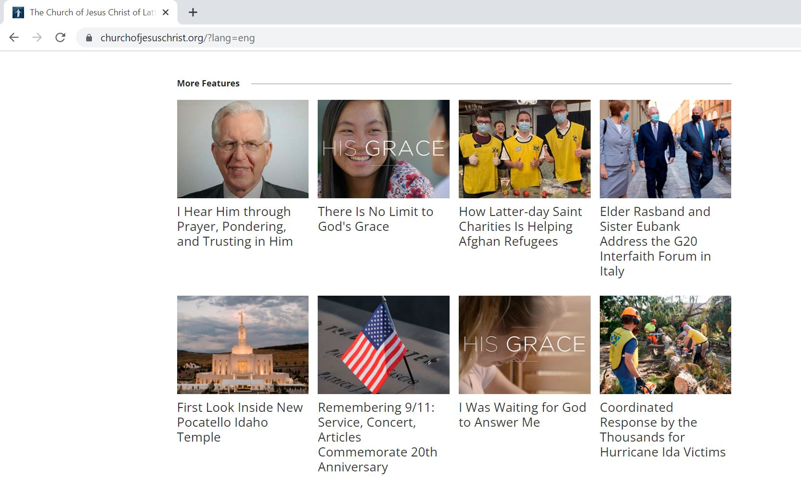

Clean Design
Jobstreet PhilippinesThe logos of each participating companies are lined up in columns and rows with enough spaces. This design allows users or site visitor to easily locate the desired logo or company.
Alignment
The Church of Jesus Christ of Latter Day SaintsTypographic elements and visual images are left-aligned creating balance and familiarity with English-oriented site visitors. Left alignment is the most commonly used design.
Contrast
McDonald's DeliveryThe color contrast used in this example helps visitors to easily find the call-to-action button. Additionally, the product gets emphasis because of the contrasting background colors.